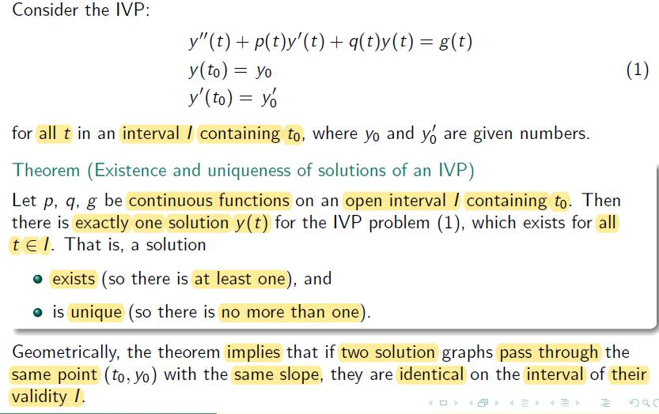
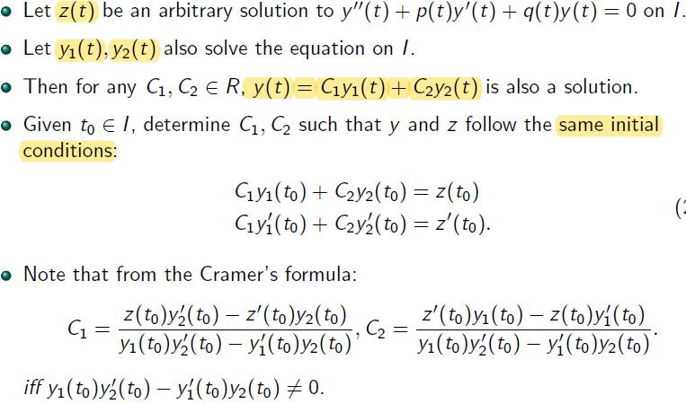
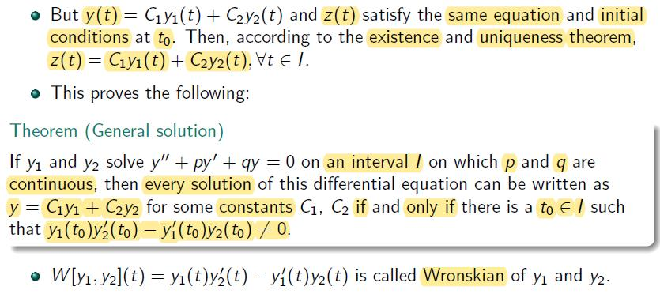
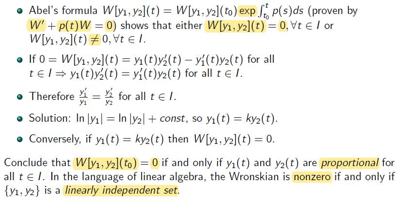
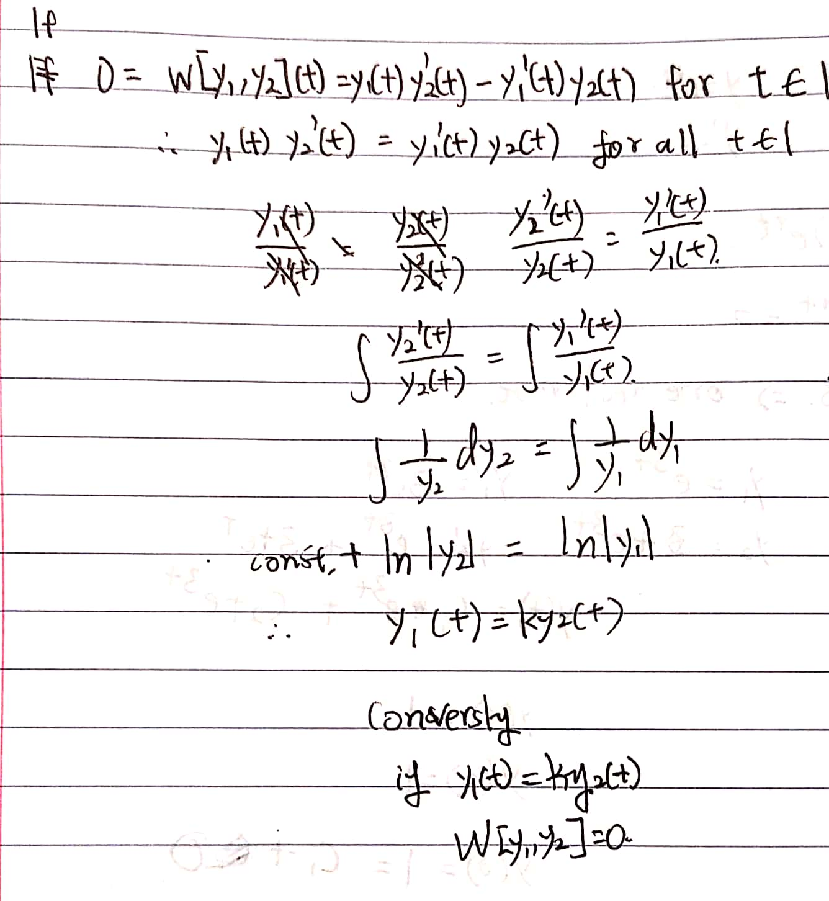
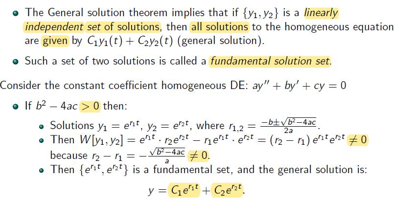
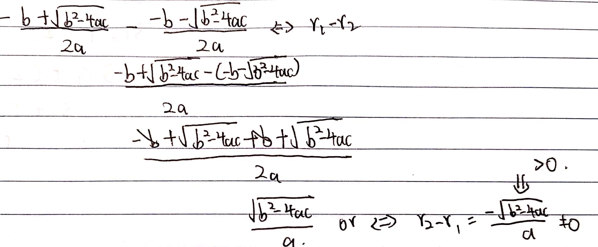
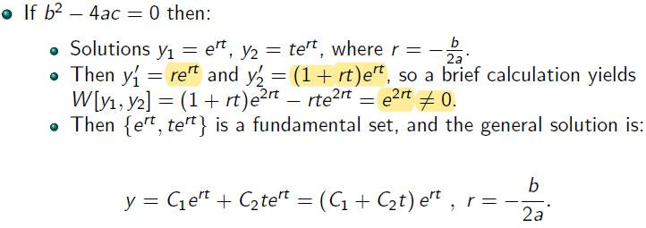
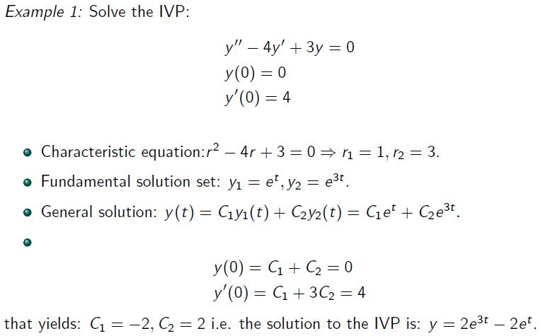
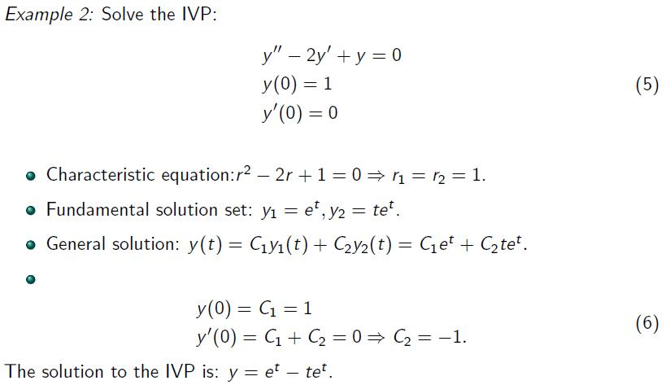

Lecture 5
Existence and Uniqueness Theorom of an IVP

General Solution to Homogeneous Equations

iff - if and only if
- proof y and z are identical (given that y≠z but they both satisfy init. cond.)
- y(t0)=z(t0)
- y′(t0)=z′(t0)

W[y1,y2](t)=det(y1(t)y1′(t)y2(t)y2′(t))=y1y2′−y1′y2
Simple Meaning of the Wronskian


Fundamental Sets of Solution



Examples

